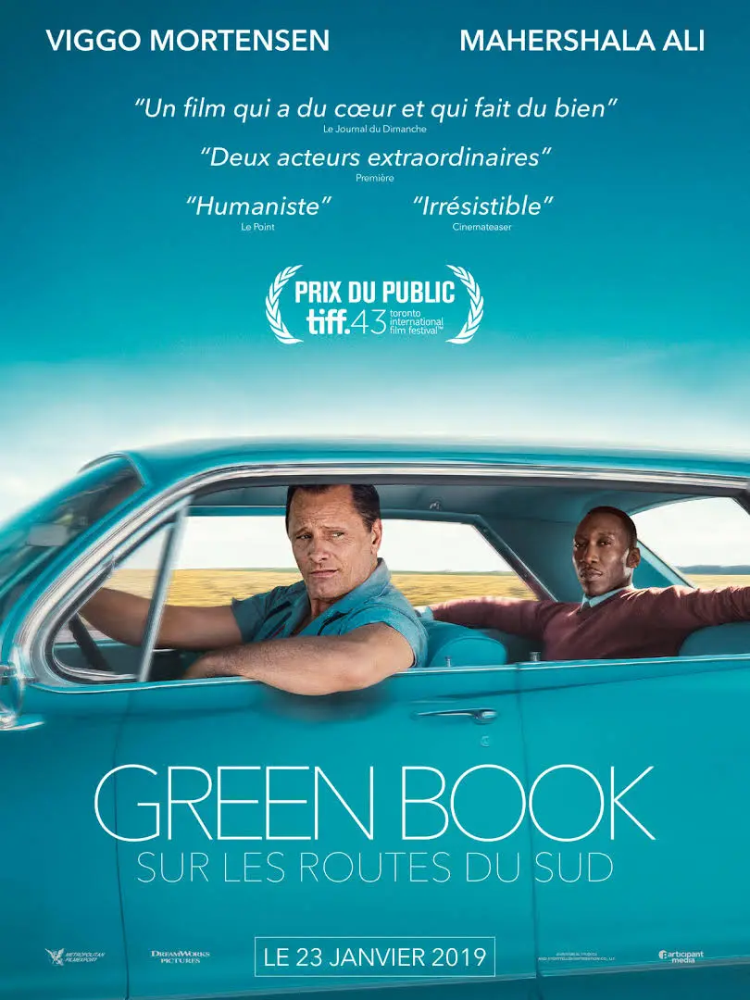

Green Book
Sur les routes du Sud
Peter Farrelly
Green Book
Sur les routes du Sud
Sommaire
- Bande annonce
- Réalisateur
- Synopsis
- Lien avec le voyage
- Bibliographie
- Question ouverte
Green Book
Sur les routes du Sud
Green Book
Sur les routes du Sud
Réalisateur
Peter Farrelly
- Né le 17 décembre 1956 à Phoenixville (Pennsylvanie)
- Américain
- Producteur d'une vingtaine de films
- Distinctions
- Golden Globes 2019 : Meilleur scénario pour Green Book
- Oscars 2019 : Oscar du meilleur scénario original pour Green Book
Green Book
Sur les routes du Sud

Synopsis
- 1962 : Année du voyage
- Personnages principaux:
- Tony Lip : Viggo Mortensen
homme blanc, conducteur - Dr Don Shirley : Mahershala Ali
Homme noir, pianiste
Green Book
Sur les routes du Sud
The Negro Motorist Green Book
- Guide de voyage
- 1936 – 1966
- Victor Hugo Green